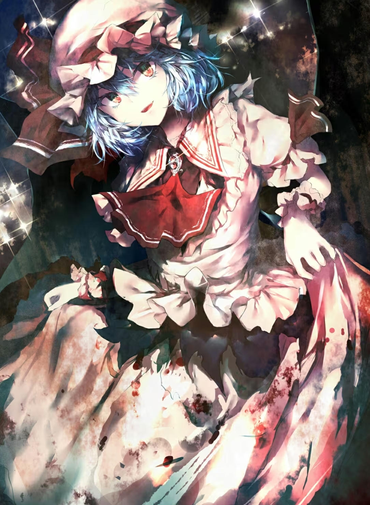

蕾米莉亚·斯卡蕾特是东方Project系列中的官方角色，首次登场于东方红魔乡，担任红魔乡的六面Boss。
她是居住在红魔馆的吸血鬼，是红魔馆的主人。
她像小孩子一样幼稚任性，并且拥有旺盛的好奇心。同时也十分的高傲、傲慢，自认为没有比她更厉害的存在。[史纪]
在红魔乡之后，蕾米莉亚还作为自机登场于东方萃梦想、东方永夜抄、东方绯想天、东方非想天则中，在官方出版物中也时有出场。
蕾米莉亚居住在红魔馆中。
作为吸血鬼，她一般白天在红魔馆睡觉，夜晚则会散步、赏花或者开宴会。不过，她也会在白天打着阳伞出门，因此白天也经常能见到她。[史纪]
她自称的上床睡觉时间是凌晨四五点。[萃梦想]
她讨厌雨天[绯想天]和晴天[绯想天]，这样的天气会阻碍她的出行。
她害怕日光，无法渡过流淌着的水。[永夜抄Manual]
但她被日光照射到后，只有皮肤表面会十分缓慢地气化冒烟。[红魔乡、儚月抄]
她喜欢喝红茶[萃梦想]、吃纳豆[史纪、二轩目]，讨厌大蒜，沙丁鱼头之类，不过不怕十字架[永夜抄Manual]。接触炒豆会有被火烧的感觉。[文花帖（书籍）]
她似乎不吃幻想乡的人类。[史纪]
她喜欢谈论残忍血腥的东西。[茨歌仙16话]
她以观看别人对自家门卫红美铃发起的挑战赛为乐。[史纪]
蕾米莉亚拥有操纵命运程度的能力。
她无意之间说出的话都可能改变周围人的命运。[史纪]
蕾米莉亚可能改变了十六夜咲夜的命运。[史纪]
稗田阿求认为蕾米莉亚会让周围人“高概率会遇上珍奇的事情”，但她认为由于无法目测而无法判断这条记载是否准确。[史纪]
她拥有吸血鬼族的强悍的身体能力。[萃梦想设定文档]
具体来讲，她拥有无法用眼睛捕捉的速度，可以摧毁岩石的力量，结实并且可以再生的肉体[萃梦想设定文档]。
她以蝙蝠和矢作为武器。[永夜抄Manual]
她可以汇聚暗夜力量，用不是火的红色灵气（一说是吹起的气流）[|萃梦想]制造巨大的十字架攻击目标，据说如果盯着这样制造出的十字架看的话就会两眼充血辗转难眠。[GoM]
她可以从指尖放出密度上更接近宝石的雾气。[文花帖（书籍）]
她可以永远地活下去，但不会再继续生长。[永夜抄Manual]